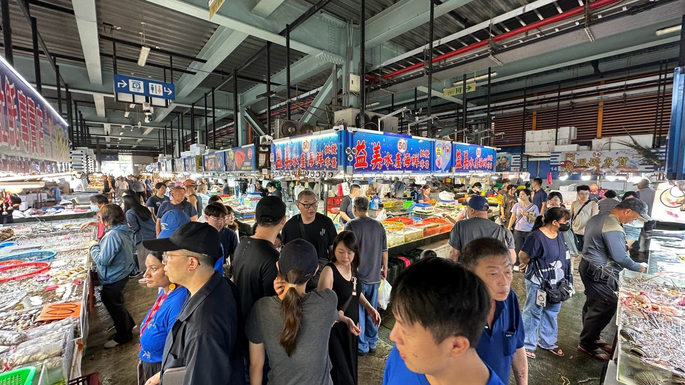
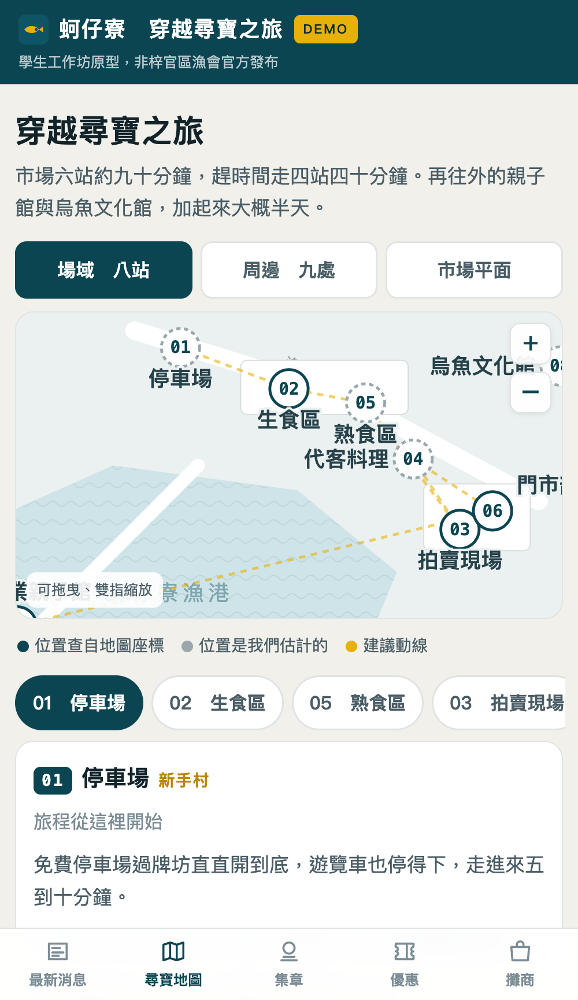
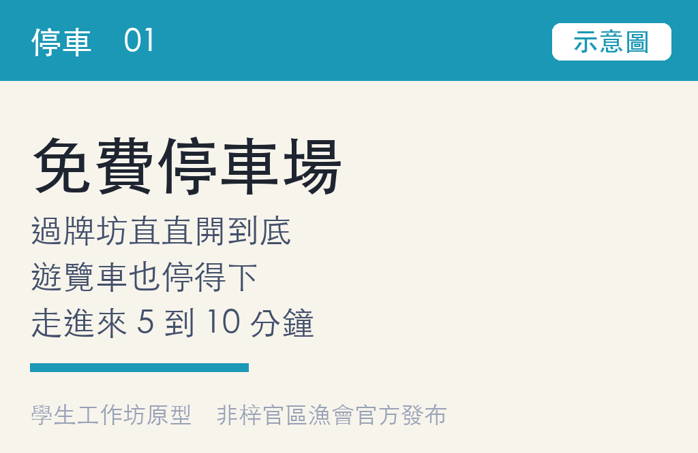
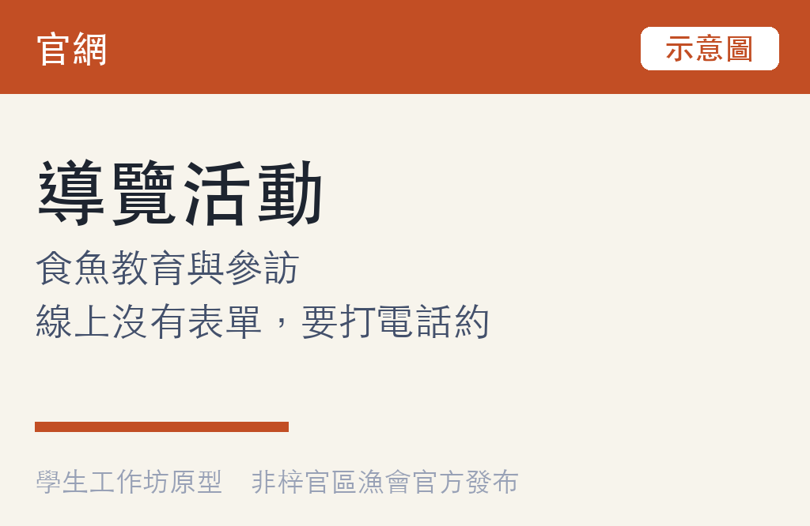
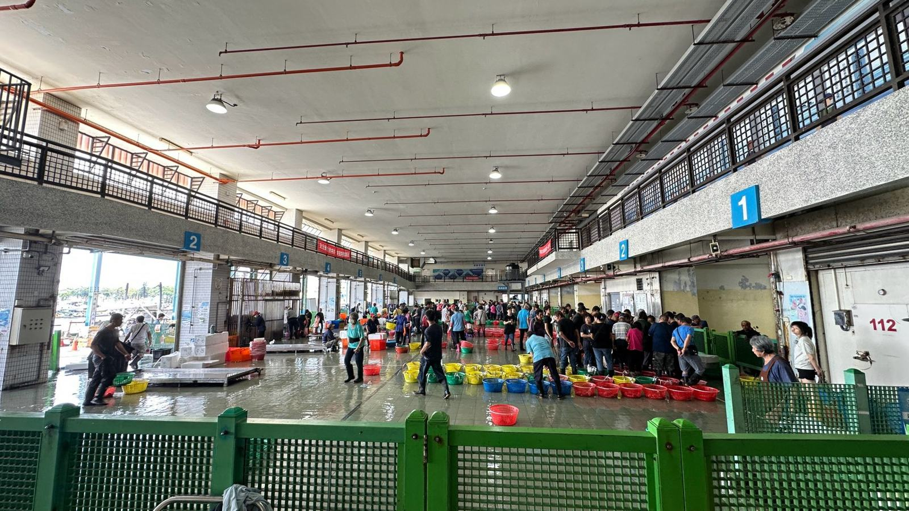

蚵仔寮 · 梓官區漁會
六百六十萬人來過
假設 80% 只停一站、只買一次
換算成錢
人來了，但留不下價值
保守估計，一年一千三百萬沒有發生
660萬
2025 全年觀光人次
觀光署統計，已查證
觀光署統計，已查證
1%
一百人裡留下一個聯絡方式
就是 6.6 萬人
就是 6.6 萬人
1,300萬
一年的回購金額
其中 10% 回購，年 2 次，客單 1,000
其中 10% 回購，年 2 次，客單 1,000
1,800萬
冷鏈展售中心的整修費
槓桿
留存動一個百分點，一年大約就是一台冷鏈展售中心，而且不需要蓋任何東西。動到三個百分點，就超過七千五百萬的直銷中心造價。
為什麼只算一次
三種混亂，全部發生在他碰到魚之前
指標
連自己人都會迷路
「一路上沒有指引，因為我也是找不到。」免費停車場走到主區還有五到十分鐘。
資訊
散在六個地方
「我覺得我們很缺整合型的資訊。」官網、線上漁港、LINE、導覽看板、現場服務、六支部門電話。
周邊
景點很多，但沒有人知道
南沙灘、曬網場、三間廟、濕地公園。這些資訊沒有完整佈達，也不知道要去哪裡搜尋。
他們現在的解法
現在只有一種方法，開口問人
01
問攤商、問門市，或打六支部門電話裡的一支。
02
指路的講法是「你看到那個藍色建物」，用地標代替指示牌。
03
有人站在那裡的時候才有效，而最需要問路的時段，正好是現場最忙的時段。
三個部門各自跑好自己那一段。中間的交接，不在任何一個部門的職責裡。
買魚在魚市場部門，裸裝與寄送在推廣部，包裝伴手禮在供銷部。
成本結構
靠人回答，多服務一個客人的成本永遠降不下來。能做到明確的那一層，是他手上那張地圖。
從看到的一件事，走到要解的那一題
資料、洞察、觀點，最後才是那一題
DATA
直接看到的一個事實
34 分鐘裡有 20 分鐘在比價，買完走出去又回頭再買一次。
→
INSIGHT
有意義的那一個跳躍
他不是趕時間，是卡在決定。缺的不是更快的流程。
→
POINT OF VIEW
一句可以行動的話
第一次來、想帶點好東西回家的家庭客，需要一條看得出來該怎麼走的路。
HMW
我們可以怎麼樣，幫助梓官區漁會，在遊客第一次前來、現場資訊分散的情況下，有效率地把資訊送到他手上，把旅遊體驗與顧客的長期消費價值一起拉起來？
設計原則
出現在他已經在做的動作上、一次只回答眼前這一步、會變的東西必須是今天的、漁會不能因此多請一個人。
他們的底子
凡是這裡的人自己發起的，都做成了
4,000噸
魚市場年交易量
產值逾五億
產值逾五億
2萬盒
烏魚子年銷量
在美國好市多
在美國好市多
4座
設計獎
紅點、iF、Good Design、OTOP
紅點、iF、Good Design、OTOP
25年
海鮮節辦到今天
每年 12 月第一週
每年 12 月第一週
2001
信用部被接管
發不出薪水
發不出薪水
2012
自己向會員代表
大會提案
大會提案
2014
直營門市、網路魚市
直銷中心落成
直銷中心落成
2015
HACCP 全國第一
信用部重開
信用部重開
2023
冷鏈展售中心
烏魚子進好市多
烏魚子進好市多
2025
觀光人次 660 萬
全台第二
全台第二
能力
十四年拿回信用部，海鮮節辦到第二十五年。外部投進來的五條硬體，有兩條卡住不動。缺的那一格不是能力。
可以複製放大的是什麼
三個部門各自那一段都做成了，沒有人把三段接起來
魚市場部門
全國第一座 HACCP 魚市場
每天十二點開拍，糶手拍賣觀摩已經在跑。缺的是遊客不知道它存在。
推廣部
食魚教育，已有認證
飯糰 DIY、魚丸製作、剝蝦體驗，持 Plus 食農體驗認證。缺的是它不在遊客的動線上。
供銷部
四種帶走方式都有
寄冰、真空、宅配、禮盒，加上電商與冷鏈。缺的是沒有人走到那裡。
所以要做的事
讓三段互相接手，而不是互相搶生意。
解法
一站式的 LINE AI 整合平台。等於每個客人身邊都站了一位不用下班的接待員。
它接起來的
本來就有的六樣
官網、線上漁港、四千一百八十位好友的 LINE、入口導覽看板、現場服務、六支部門電話。
它加上去的
一條動線，以及港外的點
港內八站，港外九處：南沙灘、曬網場、三間廟、濕地公園。每一站有故事、有導航、有一個章。
結果
邊際成本趨近零
走 Reply API 的問答不計費也無上限，第一百個客人跟第一個一樣，不多花錢，也不多一個人。
跟舊做法比
一個人一次帶一個客人，六點下班。這一個有多少人問就答多少，幾點都在，而且每一次都待在漁會願意承諾的範圍裡。
已經上線 01 入口
現在拿手機掃，一分鐘就能自己試
蚵仔寮
你好，這裡是蚵仔寮。
我是 AI 小幫手，不是真人。
下面的選單可以直接點。

01
六格選單，不用打字。五格丟關鍵字給小幫手，一格直接連到漁會自己的線上商店。
02
第一句就講明自己是 AI，打「真人回覆」它會安靜下來，換真人接手。
03
它不報任何價格。一百多攤各自定價，替他們報就是替他們擔責任。

已經上線 02 平台
牆上那張地圖，現在在他手上

動線
市場六站，九十分鐘
趕時間走四站四十分。再往外兩站，加起來大概半天。
港外
周邊九處
南沙灘、曬網場、三間廟、濕地公園。全部已經存在。
三種看法
場域八站、周邊九處、市場平面
位置查自地圖座標，點與點之間標步行分鐘。
每一站
有故事、有導航、有一個章
圖文選單直接連過去，不用另外下載。
已經上線 03 它給出去的東西
問「停哪裡」，拿到的是可以按的地圖

免費停車場
遊覽車也停得下，走進來 5 到 10 分鐘。
在地圖上找

付費停車場
比較近，一天上限 150 元。
在地圖上找

導覽活動
食魚教育與參訪。
打給推廣部

寄冰與宅配
逛完再拿，或直接寄到家。
怎麼保存
為什麼一律用卡片
一則純文字連結，跟一整組帶圖帶按鈕的卡片，扣掉的額度一模一樣。六組多頁訊息，二十四張卡，每一張都有下一步可以按。
螢幕錄影放這裡
把手機錄影存成
重新整理就會自動播放
oa_img/demo.mp4重新整理就會自動播放
兩個市場
六百六十萬人全部停在第一階，卡的是第一階到第二階
01
一次消費就走
660 萬人在這裡
02
留下聯絡方式
卡在這一步
03
回購與回訪
還沒開始
市場一 到店
六百六十萬人次，取得成本趨近零
全台漁港第二，2025 年前八名加總逾 2,500 萬人次。流量來自地點與口碑，不是投放。
市場二 線上
生鮮與食品電商九百四十四億（2021）
2019 年為 709 億，滲透率從 6.7% 升到 8.7%。他們已經有電商、冷鏈與認證。
名單已經開始了
LINE 官方帳號已經有 4,180 位好友。卡住的是這份名單跟現場那六百六十萬人次沒有連在一起。
錢怎麼跑
取得成本已經沒得省，剩下的槓桿只有留存
| 情境 | 留下聯絡方式 | 其中回購 | 年回購金額 | 要做什麼 |
|---|---|---|---|---|
| 現在 | 已有 4,180 位好友 | 未取得 | 未取得 | 名單與到訪的對應資料沒有拿到 |
| 保守 | 1% 6.6 萬人 | 10% 年 2 次 | 約 1,300 萬 | 結帳時給一個掃碼的理由 |
| 中性 | 3% 19.8 萬人 | 15% 年 3 次 | 約 8,900 萬 | 加上寄冰與宅配的引導 |
| 積極 | 5% 33 萬人 | 20% 年 4 次 | 約 2.6 億 | 會員制與二樓的停留體驗 |
趨近零
遊客取得成本
零元
小幫手日常運作，問答不計費
一次消費
目前一個客人的價值
風險下降
漁會扛滯銷收購，需求可預期就是降成本
競爭與定位
漁港這一塊已經第二，差的不是魚，是停留時間
交通部觀光署 2025 年 1 至 12 月。蚵仔寮是第三名的 2.7 倍，再從別的漁港搶人，空間很小。
我們不碰的
沒有潮間帶可以蓋，二樓卡在租約與主管機關，也不能加人。那些是重力。剩下能動、而且動得最快的，是資訊這一層。
POC 要看的三個數字
留存上升、流失下降，終身價值翻倍
01 Retention rate
留存率 ＝ 留下聯絡方式的人 ÷ 當日來客
基準是零，四千一百八十位好友從來沒有跟到訪對應過。量法是一個假日四小時在門市部門口實數。關鍵節點：結帳時給一個掃碼的理由。
02 Churn rate
上限 30%
流失率 ＝ 封鎖人數 ÷ 加好友人數
LINE 後台本來就會算。超過三成代表這個帳號是打擾，POC 就停。關鍵節點：只推資訊，不推促銷。
03 LTV
1,000 元 → 2,000 元
LTV ＝ 客單價 × 年回購次數
現在是來一次買一次。一年兩次就是翻倍。放到 6.6 萬人、回購率 10% 上，一年一千三百萬。關鍵節點：寄冰與宅配，讓第二次購買不必再跑一趟。
怎麼量
三個數字，三個現成的來源：門口人工計數、門市部單據筆數、LINE 官方帳號後台。不新增表單，不裝追蹤。
停損
流失率超過三成、四週後留存率沒有動、或每天維護超過五分鐘。任一成立 POC 就停，帳號交還或關掉。

蚵仔寮 · 梓官區漁會